01
ODM 变更管理系统
线上运行中
针对锐捷与字节 ODM 合作中变更单依赖即时通讯传递、进度难以追溯的问题，将跨公司变更流程迁移至飞书妙搭平台线上运行：客户经由免登录表单提交变更单，六阶段流转全程留痕、系统自动通知、逐关确认，过程信息不再依赖人工传递。
6
阶段流转 · 拖拽看板
28
字段变更单 · CR 编号自增
3
份免登录表单 · 开链接即填
3
格式导出 · Excel / Word / PDF
变更单表 · Base 实时读写 · 妙搭 Web 三视图
变更单流转流程
STEP 1
待受理
客户提单
STEP 2
影响分析中
锐捷承接
STEP 3
待字节确认
客户拍板
STEP 4
执行中
改动落地
STEP 5
每周反馈
进展周报
STEP 6
已关闭
发起人确认闭环
任一阶段可流转至「已驳回」出口，驳回原因留档可查。
系统功能 · 模块化能力
▪变更提单——免登录分享表单与妙搭弹窗双入口，八字段精简填写，飞书实名自动绑定提单人
▪流程引擎——六阶段状态机驱动流转，任一阶段可驳回留痕；拖拽看板 / 列表 / 统计三视图
▪路由通知——阶段变更自动私信触达承接人与相关人，逐关表单回传，通知路由按角色配置
▪闭环管控——关闭前发起人确认；访问口令门禁与登录用户台账保障数据边界
▪统计看板——全局统计指标卡与变更类型 / 所处阶段 / 紧急度三维度分布图表
▪报表导出——Excel 多条简略、Word 六环节全流程、PDF 单条详情，一键生成
change-management-system/miaoda-app · NestJS 代理 + Base 实时读写
线上入口 ↗
从接需求到投产
02
AI 敏捷生产系统
开题已过评审
V2.2
对公司「接需求到投产」的主流程实施 AI 化改造并完成立项。按公司真实流程测算：全流程 4~5 天、EE 填单 0.5 天、评审环节引入 AI 后 0.9 人时；配套工具已陆续交付，其中单板委托控制台已完成试点、线上运行。
4–5天
全流程（真实口径）
0.5天
EE 填单
0.9人时
评审 · AI 化之后
0.149s
3 板工艺文件演练（npi-doctor）
立项报告 V2.2 · 李南 / 刘龙评审意见已吸收 · 8/19 评审会妙记存档
业务主流程 · 立项报告确定
厘清需求
MRD → HRS
齐套预算
长周期物料部品
委托加工单
云文档登记 · AI 填单
委托工单
生产流程系统提起
已交付的配套工具
▪npi-doctor 工艺文件产线——batch --docgen 一体化输出，3 块单板演练全流程 0.149 秒
▪单板委托控制台——填单 3 分钟 + ODB 自动评审；试点已结束，线上运行中
▪生产协同系统——覆盖 29 步生产流程，机器人自动建群、自动催核，替代人工追料沟通
▪智能填单软件——Windows 免安装版 v1.1 已交付，产线采用「AI + 工程师」协同模式编写工艺文件
A3开题报告-AI敏捷生产系统.xlsx（公司模板重制）· AI敏捷生产系统立项报告V2.2.docx
配套：npi-doctor / 单板委托控制台 / 29 步协同 / 智能填单
快 · 而不编
03
MRD → HRS 系统
技能已固化
v1.3
实现客户 MRD（市场需求文档）向 HRS（硬件需求规格书）【产品规格（PSE 主导）】列的自动转换：MRD 有据可查的内容由 AI 完成，依据不足的条目一律转入 PSE 确认清单，在大幅压缩工时的同时，不引入任何未经证实的内容。
988
行 · 首战实填（23 模块）
6
步流水线 · 定位卡与多 Agent 并行
3
档状态机 · 每格可溯源
v1.3
三次实战迭代固化
2026-08-10 首战 23 模块 988 行 · 08-12 广东项目实测 · 现行 v1.3
填写规则 · 三档状态机
●
MRD 有据
依据 MRD 原文填写，记录引用行号，可回溯核查。
◆
硬约束可推导
依据硬约束推导：如 1+1 冗余对应双电源、32×800G 配置下无 10G 光口对应条目填 N；模板基线亦属有效依据。
○
需 PSE 确认
功率、型号、认证适用性等 MRD 未覆盖项一律不作代答，附背景与建议转入 PSE 确认清单。
两条铁律 · 源自实战返工教训
铁律一 · 先通读，后下笔
填写前必须通读 MRD 全文并产出《产品定位卡》，每一处填写均可追溯至 MRD 行号。早期曾因模型自行假设「非出海」前提误判 4 行 NEBS 条目，而 MRD 原文明确为出海机型，该教训已固化为强制流程。
铁律二 · MRD 未覆盖项，一律归 PSE
客户定制条目（含「XX」「由PSE填写」字样）无论推断把握多大均禁止代答，统一出具确认清单交 PSE 决策，杜绝任何臆造内容进入交付物。
skills/hrs · 动态定位规格列（EMC=L / 开关电源=N / 连接器=P，不预设固定列）· 脚本校验回写 + 自动重命名
从人工研判到智能诊断
04
线上故障处理助手
线上运行中
已交付
面向锐捷线上故障的全生命周期处理助手已上线运行：故障群内回复 @助手 即触发自动诊断，输出根因分析、置信度、证据链与处置建议，历史相似案例自动检索，结论经人工确认后方对外发布。
0.95
根因置信度 · 真实案例实测
3
条相似案例自动检索（RMA 闭环）
4
项人工确认选项 · 结论发布前置
8
条行动项自动推送确认
2026-09-11 需求收集会（第一场）· 会议纪要在档 · 08-07 起产出真实诊断
处理链路 · 最小闭环
群消息采集
案例要素结构化
线上案例咨询库
统一模板 · 可检索
AI 自动分析排查
根因与证据链
处置建议发布
人工确认后输出
已交付内容
▪自动诊断——群内 @ 助手即触发分析；08-07 B5020 CPU MCE 真实案例完成根因定位，置信度 0.95，并附完整证据链
▪案例库落盘——诊断结论自动写入案例库（Base / 表 / 记录三级定位），相似案例自动检索辅助处置决策
▪数据通道——fault-mcp（数据库 SSE 接口）验证通过，工单故障历史已完成导出核对
▪人工确认工作流——诊断结论生成客户回复草稿，提供确认、退回、闭环、暂停四项选项，确认后方对外发布
fault-response-agent-skill/ · analysis/bug-harness/ · audit/diag-cases.jsonl
需求收集会纪要 ↗
眼见为实
附
作品展示集
生产环境实拍 · 实跑
以下均为生产系统实拍与真实工具输出：系统全景、提单表单、拖拽看板、立项报告原件、规格列定位实测、故障诊断实录与项目交付包。
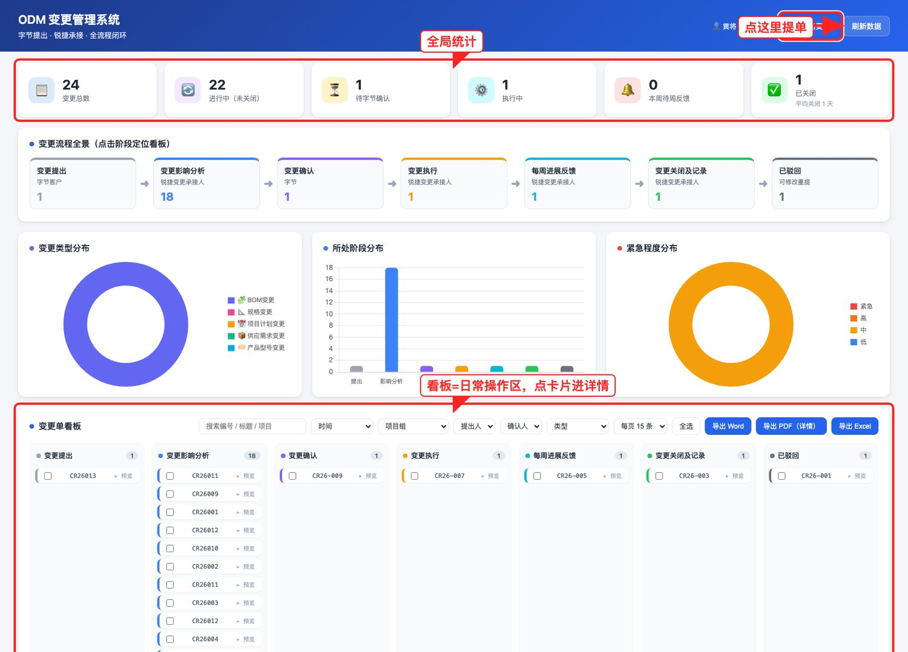
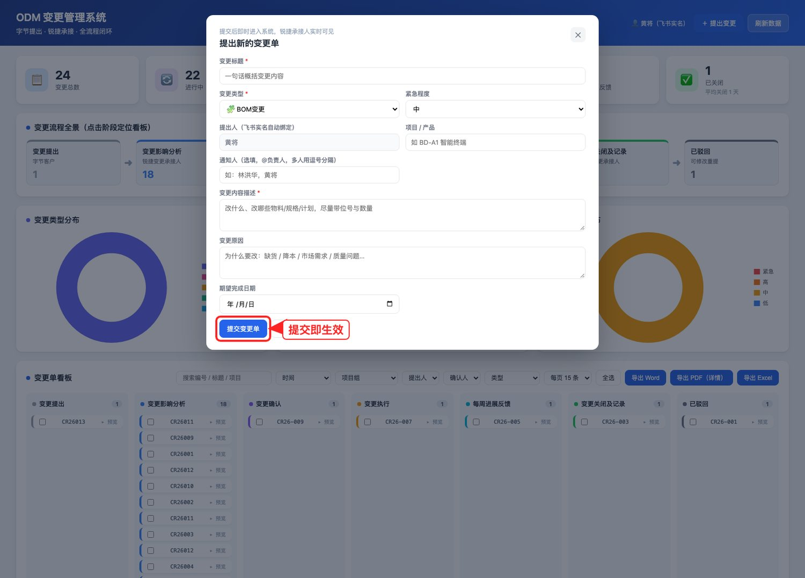
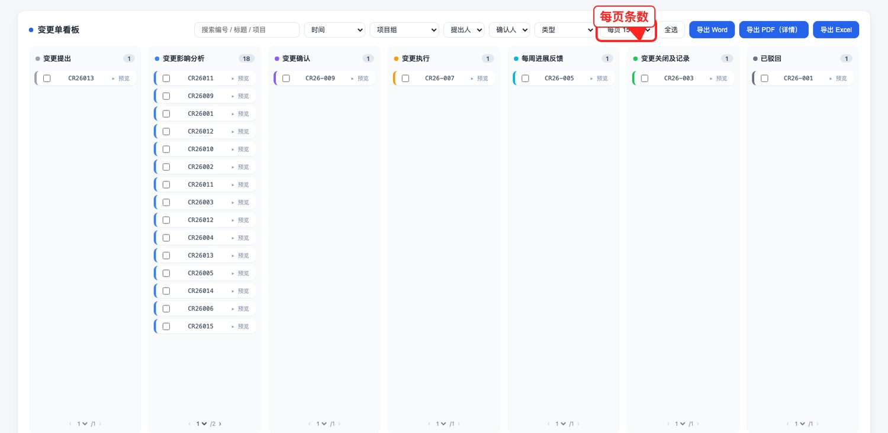
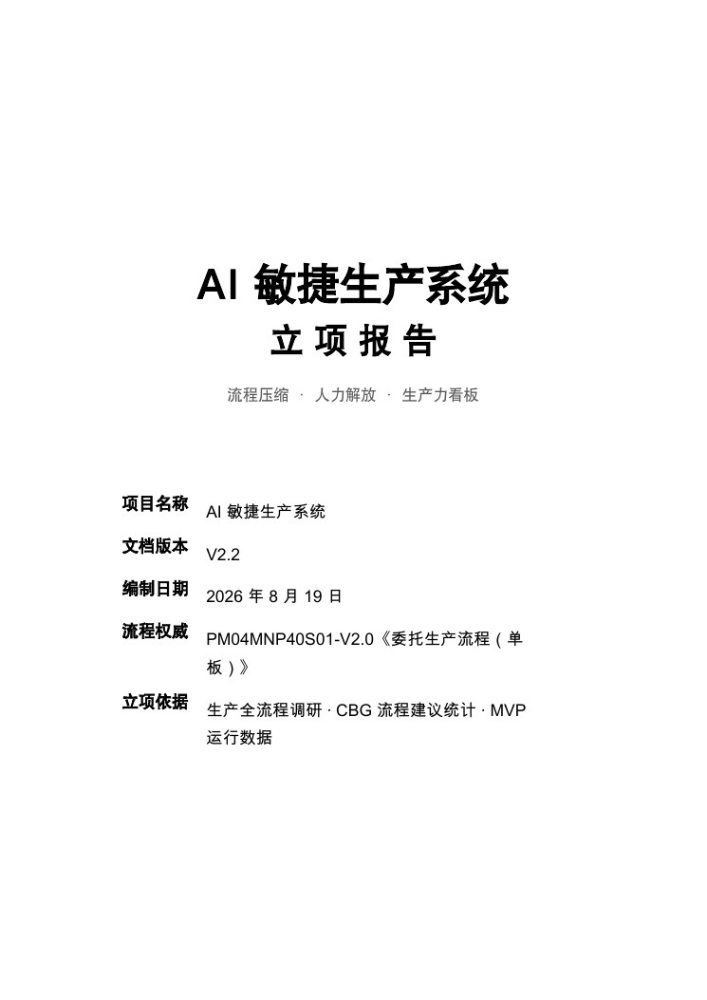
$ python3 skills/hrs/scripts/hrs_scan.py HRS-XXXX.xlsx（脱敏样表）exit=0
| sheet | 规格列 | 数据行 | 已填 | 空 |
|---|---|---|---|---|
| 以太网 | K | 52 | 1 | 51待填 |
| EMC | L | 170 | 6 | 164待填 |
| 开关电源（产品需求） | N | 49 | 2 | 47待填 |
| 连接器（系统设计） | P | 13 | 3 | 10待填 |
| 风扇（系统设计） | O | 22 | 1 | 21待填 |
| 软件对硬件需求 | M | 77 | 1 | 76待填 |
| 产品特定规格 | K | 152 | 1 | 151待填 |
| 合计（23 模块） | 988 | 97 | 891 |
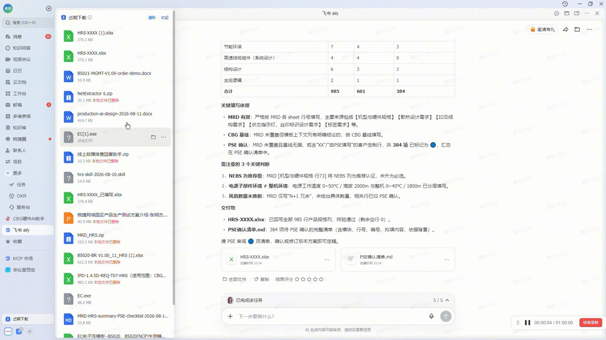
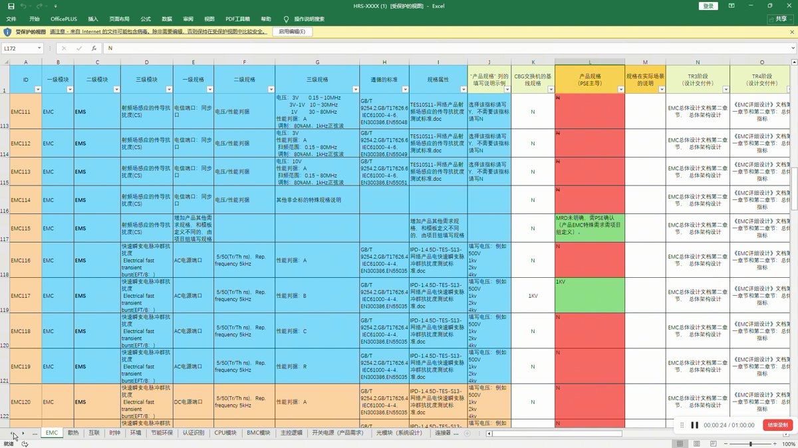
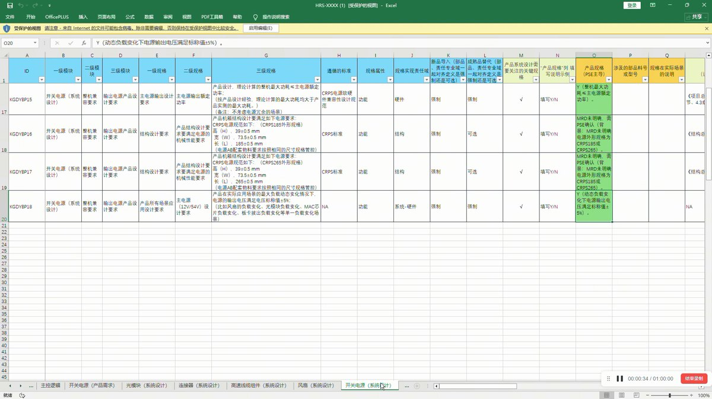
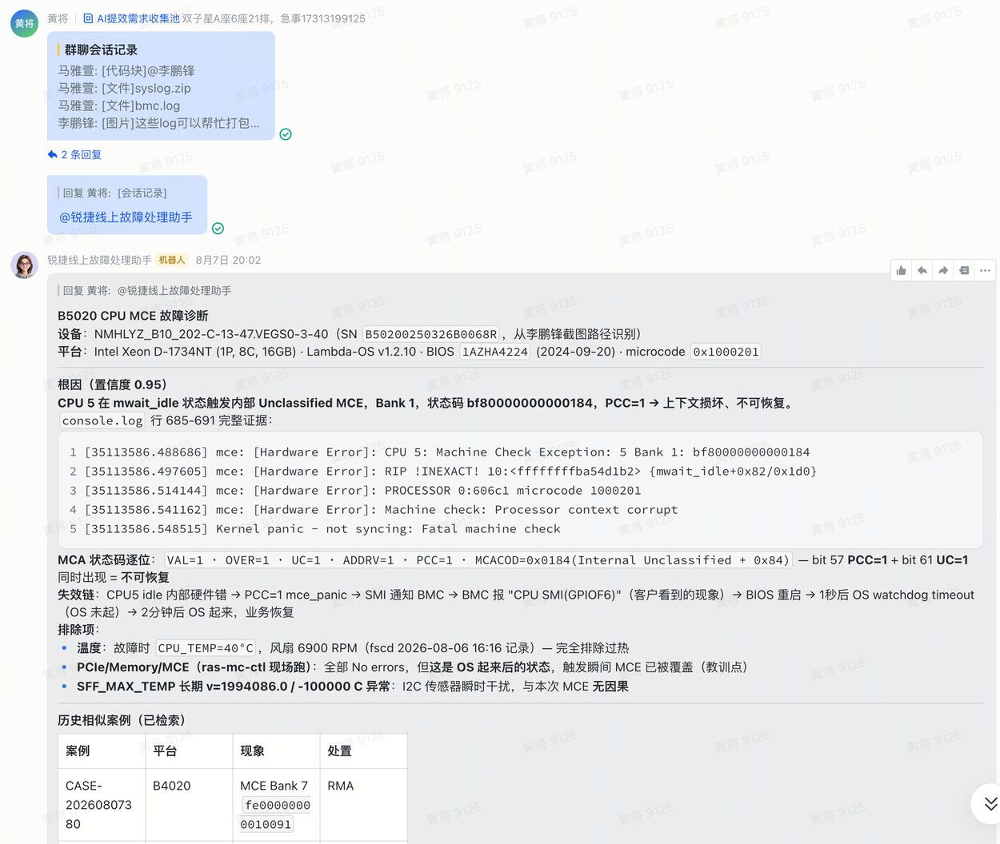
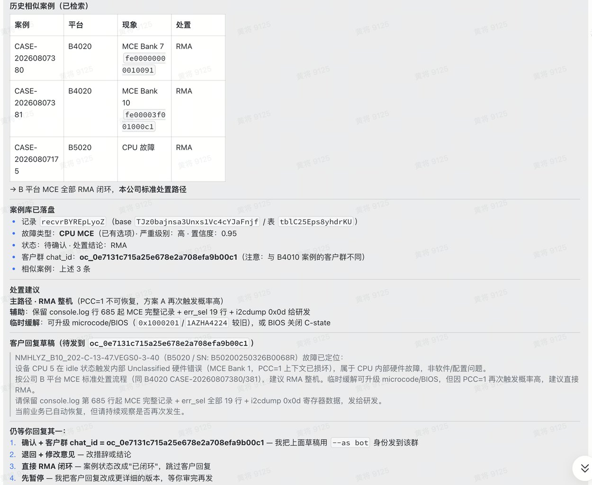
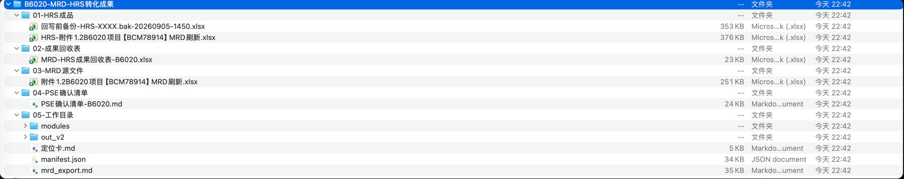
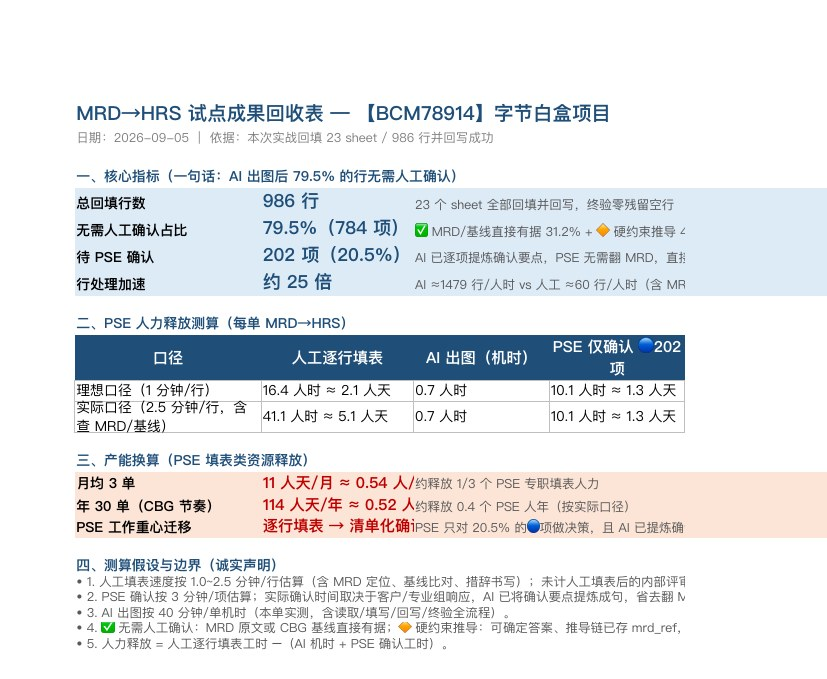
※ 图五为 23 个 sheet 之节选（8/23），完整扫描输出在档可复查；实拍截图摄于操作指南编制时点。
四个系统，同一套方法。
以真实流程为骨架、真实数据为依据、真实用户为检验；AI 仅处理有据内容，最终结论保留人工确认。